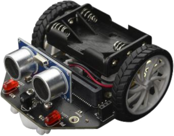

Ayuda a Mara en su aventura marciana
Task one. ¡Llegamos a Marte!
Caso práctico
|
¡ Pon en marcha tu imaginación ! La nave espacial es la clase, la puerta de salida es la compuerta de la nave, y el pasillo ya es Marte. Debes emular el programa que ha seguido Mara que le ha permitido salir al planeta y volver a la nave.
|
|
¿Cuál de estas fotografías muestran una parábola?
¡Un segundo! Este es un buen momento para escoger un lenguaje para programar robots...
 Tutoriales y guías sobre los distintos lenguajes de programación robóticos más usuales.
Proceso para llevar a cabo la tarea
Razona el algoritmo
Averiguando...
Una vez comprendida la misión, y elegido un lenguaje de programación adecuado a tu robot, intenta averiguar lo siguiente:
- ¿Qué órdenes o qué bloques necesitas para mover el robot hacia adelante?
- ¿Qué órdenes o qué bloques necesitas para hacer girar el robot?
- Opcionalmente, ¿Qué órdenes o qué bloques necesitas para parar los motores?
- ¿Durante cuánto tiempo deben estar las órdenes en funcionamiento?
- ¿Cómo debes ordenar las órdenes dentro del programa?
Puede servirte el rellenar una tabla como ésta...
N |
Bloque o bloques (órdenes) |
Tiempo |
Observaciones |
| 1 | |||
| 2 | |||
| 3 | |||
| 4 | |||
| ... |
Como por ejemplo...
N |
Bloque o bloques (órdenes) |
Tiempo |
Observaciones |
| 1 |
Mueve motor IZQUIERDO hacia adelante Mueve motor DERECHO hacia adelante |
20 s. | A la misma velocidad |
| 2 |
Para motor IZQUIERDO |
3 s. | El motor derecho continúa en movimiento |
| 3 |
Mueve motor IZQUIERDO hacia adelante Mueve motor DERECHO hacia adelante |
20 s. | A la misma velocidad |
| 4 | Parar ambos motores | ||
| ... |
Cómo trabajar
- Normalmente se trabaja en parejas o en pequeños grupos, con un robot y un ordenador para programarlo.
- Aunque tu compañero/a sea quien maneje el ordenador o el robot, intenta siempre entender lo que estáis programando o haciendo: las órdenes o bloques que se están usando, el tiempo que tardan en ejecutarse, el orden en el que se colocan los bloques en el programa...
- Compartir las ideas con los demás, colaborar en lograr el reto, no molestar a otros grupos si están probando o trabajando...
- Si no sale a la primera, no desanimarse. Es normal que haya que hacer varias pruebas hasta que salga.
Pistas
La clave para el éxito está en:
- Pensar siempre, a priori, qué estamos haciendo.
- Averiguar los bloques de programación necesarios.
- Rellenar la tabla ANTES de programar el robot; al menos los bloques que creemos necesitar en el orden correcto.
- Elegir velocidades adecuadas (ni muy lento ni muy rápido) e ir probando tiempos.
- No pasar al paso siguiente hasta no tener seguro el anterior.
Obra publicada con Licencia Creative Commons Reconocimiento No comercial Compartir igual 4.0